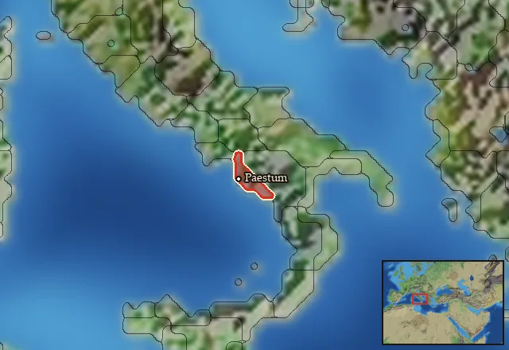

RTR: Imperium Surrectum
RTR: Imperium SurrectumLucanians

- difficulty Very Difficult
- Roman culture
- believes
 Italic
Italic - 0 settlements
- 0 characters
- 13 faction units
- 432 regional units
Homeland
Lucanians's homeland is 1 region. Only there can it install the Homeland government (more on homelands).

Starting diplomacy
Lucanians begins the campaign with no allies, no trade agreements and no wars.
Like every faction, it is also at war with the  Free Peoples, who hold every settlement no faction does.
Free Peoples, who hold every settlement no faction does.
Reforms
Open to every faction: Military innovations have arrived!, Second wave of military innovations have arrived!.
Units you can recruit
The same as in the main campaign.